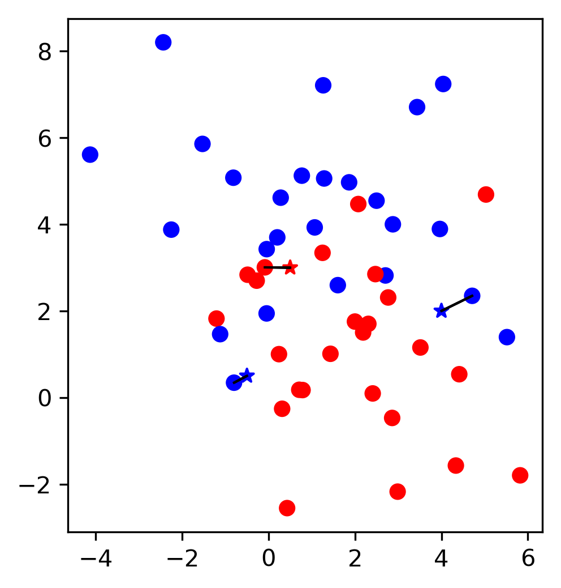
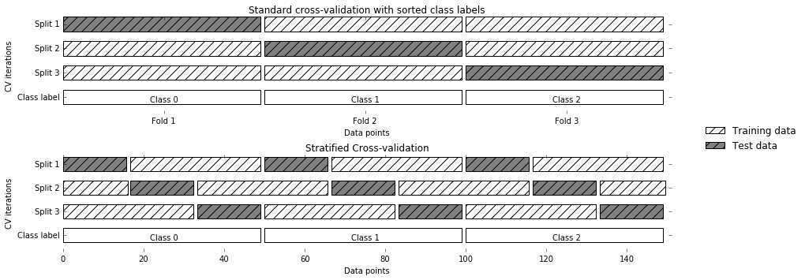

Model Selection and Validation
09/07/2022
\(k\)-Nearest Neighbors


\( f(x) = y^{(j)} \) , where \(j = \text{argmin}_k ||x_k - x||\)
Accuracy
- Split data into training and testing
- Evaluate accuracy: # correctly classified / # data points
kNN code with scikit-learn
from sklearn.model_selection import train_test_split
X_train, X_test, y_train, y_test = \
train_test_split(data, target, random_state=0)
from sklearn.neighbors import KNeighborsClassifier
knn = KNeighborsClassifier(n_neighbors=1)
knn.fit(X_train, y_train)
y_pred = knn.predict(X_test)
acc = knn.score(X_test, y_test)
print(f"accuracy: {acc:.2f}")
kNN Notes
- Can use more than 1 neighbor: majority vote
- Can be used for regression (average "votes")
- "fit" doesn't need to do anything – just store data
kNN Implementation (k=1)
import math
# Assume we have data and target as np
def predict(X):
predictions = []
for x in X:
best = None
mn = math.inf
for ngh in data:
dist = euclidean_distance(d, ngh)
if dist < mn:
mn = dist
best = ngh
predictions.append(best)
return np.array(predictions)
Applied kNN
kNN for Boston
dataset = load_boston()
df = pd.DataFrame(dataset['data'], columns = dataset['feature_names'])
X_train, X_test, y_train, y_test = \
train_test_split(df, dataset['target'],
test_size=0.20, random_state=42)
from sklearn.neighbors import KNeighborsRegressor
knn = KNeighborsRegressor(n_neighbors=1)
knn.fit(X_train, y_train)
pred = knn.predict(X_test)
print(np.sqrt(mean_squared_error(pred, y_test)))
6.533458382156615
Compared to Linear Regression
from sklearn.linear_model import LinearRegression
lm = LinearRegression()
lm.fit(X_train, y_train)
pred = lm.predict(X_test)
print(np.sqrt(mean_squared_error(pred, y_test)))
4.9286021826653394
Alternative metric: \(R^2\)
\( R^2 = \left(1 - \frac{\sum_{i=1}^m (y^{(i)} - \hat{y}^{(i)})^2}{\sum_{i=1}^m (y^{(i)} - \overline{y})^2} \right) \)
print(knn.score(X_test, y_test))
print(lm.score(X_test, y_test))
0.4179206827765607 0.6687594935356316
kNN for Classification (iris)
from sklearn.datasets import load_iris
iris = load_iris()
X = pd.DataFrame(iris.data, columns=iris.feature_names)
y = iris.target
X_train, X_test, y_train, y_test = \
train_test_split(X, y, test_size=0.20, random_state=42)
from sklearn.neighbors import KNeighborsClassifier
knn = KNeighborsClassifier(n_neighbors=3)
knn.fit(X_train, y_train)
print(knn.score(X_test, y_test))
1.0
Model Complexity
Tuning Parameter: # neighbors

kNN with more neighbors

Hyperparameters
- Parameters: values our model learns from data and uses for prediction
- Hyperparameters: parameters for how our model learns
- No perfect way to automatically find best
Influence of Neighbors

Model Complexity vs. Accuracy
Model Complexity vs. Error

Overfitting and Underfitting

Sources of Error
- Noise
- Bias
- Variance
Noise
- Data is often inherently noisy
- Variables you can't model or predict
- Life is messy!
Bias
- Your model has biased towards certain functions
- Over all possible training sets (of size \(m\)), what's the average fit?
- Ex: fitting a constant function -> high bias
- low complexity -> high bias
Variance
- How much do specific fits vary from expected fits?
- i.e., do your specific \(m\) data points affect the fit a lot?
- high complexity -> high variance
Bias-Variance Tradeoff

Source: http://scott.fortmann-roe.com/docs/BiasVariance.html
Error vs. Dataset Size
Source: http://www.stats.ox.ac.uk/~sejdinov/teaching/sdmml15/materials/HT15_lecture12-nup.pdf
Error vs. Dataset Size
Source: http://www.stats.ox.ac.uk/~sejdinov/teaching/sdmml15/materials/HT15_lecture12-nup.pdf
Model tuning
Searching for Hyperparameters

Overfitting the Validation Set
data = load_breast_cancer()
X, y = data.data, data.target
X = scale(X)
X_trainval, X_test, y_trainval, y_test \
= train_test_split(X, y, random_state=1)
X_train, X_val, y_train, y_val = \
train_test_split(X_trainval, y_trainval, random_state=1)
knn = KNeighborsClassifier(n_neighbors=5).fit(X_train, y_train)
print("Validation: {:.3f}".format(knn.score(X_val, y_val)))
print("Test: {:.3f}".format(knn.score(X_test, y_test)))
Validation: 0.981 Test: 0.944
Noisy Tuning
val = []
test = []
for i in range(1000):
rng = np.random.RandomState(i)
noise = rng.normal(scale=.1, size=X_train.shape)
knn = KNeighborsClassifier(n_neighbors=5)
knn.fit(X_train + noise, y_train)
val.append(knn.score(X_val, y_val))
test.append(knn.score(X_test, y_test))
print("Validation: {:.3f}".format(np.max(val)))
print("Test: {:.3f}".format(test[np.argmax(val)]))
Validation: 0.991 Test: 0.951
Data Splitting
Threefold Split
- pro: fast, simple
- con: high variance, bad use of data for small datasets
Overfitting the Validation Set

Overfitting the Validation Set
Overfitting the Validation Set

Overfitting the Validation Set
Implementing Threefold Split
X_trainval, X_test, y_trainval, y_test = \
train_test_split(X, y, random_state=1)
X_train, X_val, y_train, y_val = \
train_test_split(X_trainval, y_trainval, random_state=1)
val_scores = []
neighbors = np.arange(1, 15, 2)
for i in neighbors:
knn = KNeighborsClassifier(n_neighbors=i)
knn.fit(X_train, y_train)
val_scores.append(knn.score(X_val, y_val))
print("best validation score: {:.3f}".format(np.max(val_scores)))
best_n_neighbors = neighbors[np.argmax(val_scores)]
print("best n_neighbors: {}".format(best_n_neighbors))
knn = KNeighborsClassifier(n_neighbors=best_n_neighbors)
knn.fit(X_trainval, y_trainval)
print("test-set score: {:.3f}".format(knn.score(X_test, y_test)))
best validation score: 0.991 best n_neighbors: 3 test-set score: 0.958
Methods for Splitting Data
Nonrandom
- create model from patients in same disease stage, test on different sample population
- spam filtering: care more about current spam techniques than old ones
Random
- Simple random sample
- Stratified random sampling
- Maximum dissimilarity sampling
Stratified Random Sampling
- Random sample within subgroups (e.g., classes)
- Similar strategy for numeric values: break into groups (e.g., low, medium, high), sample from these
Maximum Dissimilarity Sampling
- Pick some measure of "dissimilarity", e.g., distance
- Repeatedly pick data points that are most dissimilar to current set of points
- Requires measure of distance and method to determine dissimilarity between sets of points
Cross Validation
Resampling Methods
- Use subset of samples to fit model, everything else to estimate error
- Repeat over and over with new samples
- Aggregate results
- Different methods in choosing subsamples
Cross Validation

- pro: more stable, more data
- con: slower
Cross Validation Workflow

Grid Search
from sklearn.model_selection import cross_val_score
X_train, X_test, y_train, y_test = train_test_split(X, y)
neighbors = np.arange(1, 15, 2)
cross_val_scores = []
for i in neighbors:
knn = KNeighborsClassifier(n_neighbors=i)
scores = cross_val_score(knn, X_train, y_train, cv=10)
cross_val_scores.append(np.mean(scores))
print("best cross-validation score: {:.3f}".format(np.max(cross_val_scores)))
best_n_neighbors = neighbors[np.argmax(cross_val_scores)]
print("best n_neighbors: {}".format(best_n_neighbors))
knn = KNeighborsClassifier(n_neighbors=best_n_neighbors)
knn.fit(X_train, y_train)
print("test-set score: {:.3f}".format(knn.score(X_test, y_test)))
best cross-validation score: 0.967 best n_neighbors: 5 test-set score: 0.944
Model Evaluation Workflow

Nested Cross Validation
- Replace outer split by CV loop
- Doesn't yield single model (inner loop might have different best parameter settings)
- Takes a long time, not that useful in practice
- Tells you how good your hyperparameter search is
Choosing \(k\)
- Usually 5 or 10
- No formal rule
- smaller \(k \implies\) worse estimate of error
- But smaller \(k\) is more computational efficient
Cross-Validation Strategies
Stratified KFold

Stratified: Ensure relative class frequencies in each fold reflect relative class frequencies on the whole dataset.
Scikit-learn defaults
- Five-fold is default number of folds
- For classification cross-validation is stratified
train_test_splithas stratify option:
train_test_split(X, y, stratify=y)
- No shuffle by default!
Repeated KFold and Leave-One-Out
- LeaveOneOut:
KFold(n_folds=n_samples)- High variance
- takes a long time
- Better: RepeatedKFold
- Apply KFold or StratifiedKFold multiple times with shuffled data.
- Reduces variance!
Shuffle Split

Group KFold

Time Series Split
Using CV Generators
from sklearn.model_selection import KFold, StratifiedKFold, ShuffleSplit
kfold = KFold(n_splits=5)
skfold = StratifiedKFold(n_splits=5, shuffle=True)
ss = ShuffleSplit(n_splits=20, train_size=.4, test_size=.3)
print("KFold:\n{}".format(
cross_val_score(KNeighborsClassifier(), X, y, cv=kfold)))
print("StratifiedKFold:\n{}".format(
cross_val_score(KNeighborsClassifier(), X, y, cv=skfold)))
print("ShuffleSplit:\n{}".format(
cross_val_score(KNeighborsClassifier(), X, y, cv=ss)))
KFold: [0.92982456 0.95614035 0.96491228 0.98245614 0.96460177] StratifiedKFold: [0.97368421 0.98245614 0.98245614 0.92982456 0.97345133] ShuffleSplit: [0.97076023 0.97076023 0.95321637 0.95906433 0.97076023 0.92397661 0.95906433 0.94736842 0.95906433 0.98245614 0.96491228 0.95321637 0.96491228 0.94152047 0.95906433 0.95321637 0.95906433 0.93567251 0.94736842 0.97076023]
Grid Search CV
from sklearn.model_selection import GridSearchCV
X_train, X_test, y_train, y_test = \
train_test_split(X, y, stratify=y)
param_grid = {'n_neighbors': np.arange(1, 15, 2)}
grid = GridSearchCV(KNeighborsClassifier(),
param_grid=param_grid,
cv=10, return_train_score=True)
grid.fit(X_train, y_train)
print("best mean cross-validation score: {:.3f}".format(grid.best_score_))
print("best parameters: {}".format(grid.best_params_))
print("test-set score: {:.3f}".format(grid.score(X_test, y_test)))
best mean cross-validation score: 0.969
best parameters: {'n_neighbors': 5}
test-set score: 0.965
kNN Search Results
import pandas as pd
results = pd.DataFrame(grid.cv_results_)
print(results.columns)
print(results.params)
Index(['mean_fit_time', 'std_fit_time', 'mean_score_time', 'std_score_time',
'param_n_neighbors', 'params', 'split0_test_score', 'split1_test_score',
'split2_test_score', 'split3_test_score', 'split4_test_score',
'split5_test_score', 'split6_test_score', 'split7_test_score',
'split8_test_score', 'split9_test_score', 'mean_test_score',
'std_test_score', 'rank_test_score', 'split0_train_score',
'split1_train_score', 'split2_train_score', 'split3_train_score',
'split4_train_score', 'split5_train_score', 'split6_train_score',
'split7_train_score', 'split8_train_score', 'split9_train_score',
'mean_train_score', 'std_train_score'],
dtype='object')
0 {'n_neighbors': 1}
1 {'n_neighbors': 3}
2 {'n_neighbors': 5}
3 {'n_neighbors': 7}
4 {'n_neighbors': 9}
5 {'n_neighbors': 11}
6 {'n_neighbors': 13}
Name: params, dtype: object
kNN Search Results